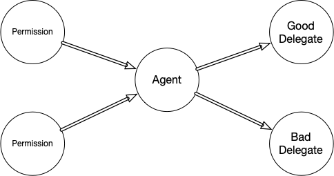

Can SSB Express Capability Security?
This post is incomplete, but after sitting in draft form for months, I’ve become concerned I’ll never share the part I did write, so I’m publishing now for Mix. I’ll note here if this page is ever updated again and when.
Secure Scuttlebutt (SSB) is one of the OGs of the decentralized/federated web. Unlike many of the other current major social protocols today which focus on a twitter-like public experience (Bluesky, Farcaster, Nostr) where privacy is then difficult to add later, SSB provided a privacy-first approach to following way back in 2014, enabling tightly woven communities with strong protocol-level curation and blocking, all in a package that is so privacy and consent-centric that it's impossible to estimate its true usage levels.
SSB was my first interaction with a social pet name system, and its author Dominic Tarr was the first person to refer me to the work of Agoric, a group who has now become dear to my heart, close collaborators, and produce software that I built on regularly.
All that said, today I'm a huge advocate of decentralized systems that leverage an object-capability (ocap) security model to enable robust and flexible composition of the network, and I'd even say that a social network built on one of these platforms, like Spritely (further reading) or Endo, should make some things possible that are simply not possible on ssb (without implementing a capability system on top of ssb, which is entirely possible, but I'll claim defeats the point of not using one of those frameworks).
SSB has a number of characteristics in common with an ocap system, as they both have a "web of trust" philosophy at their core:
- Nothing is granted to a stranger by default.
- What is granted can be shared again (your feed is visible by your followers' followers).
The core limitations of SSB as I'm aware of them are:
- The data model is coarse (when you friend someone, you share all of your profile/history with them as one blob, which is also shared with their friends).
- The protocol operates on data, and does not have an inherent/convenient/secure way to share authorization to operate on/update your own data.
I was going over this perception with Mix, who enjoys developing on SSB, and challenged the claim that it isn't possible to securely share access control in a capability-secure way using the SSB protocol. We developed a hypothetical scenario that went something like this:
- I make a blog on SSB.
- I find myself wanting to add a contributor.
- I create a
contributorsarray, and update my blog's logic to validate if posts are by those contributors. - What if I want those contributors to be able to invite contributors? I add a
canInviteboolean to the array's members, and now we have transitive delegation.
I think I can describe a few fundamental limitations of this approach that independently point at the need for a capability system in this scenario:
- The Tower of Admins (which I coined just now)
- The Confused Deputy
- Dynamic attenuation.
The Tower of Admins
The tower of admins problem is a side effect of any access control list (ACL) hierarchy where a series of users want the ability to invite subsequent users without losing the ability to revoke that invitation.
If all users of a group are absolute peers, and the ability to invite and kick were both afforded to all members, then the group would only need to invite a single malicious user before potentially being all kicked out of the group, and having the group permanently hijacked by the malicious invitee.
For this reason, basically all ACL systems implement some kind of hierarchy, where the original creator of a document is an "admin", and invites other members to be something less-than admins, so they can be kicked by the admin. This brings the annoying side effect that the sysadmin has to be messaged and nagged for every membership change (inviting or kicking), and practically professionalizes this extremely security-sensitive role as an "IT Admin", since a large enough organization has enough changes of membership that it could be a person's full time job just to add and remove users.
One way to mitigate this administrative-overwhelm is to introduce some kind of sub-admin role, or maybe promote the original admin to a "Super-Admin" who is able to invite Admins, but also kick them, while allowing this new second-class user to do all the other things a user can do. This scales the organization by one layer of invitations, but does not necessarily imply the end of the benefit of new layers of users being able to invite and administrate sub-groups of users: After all, one might also want to grant permissions to a process or AI agent, which itself might want to enlist a third party agent. The ACL has no way to allow additional levels of administration except by creating new fixed hierarchical roles, and migrating users to the appropriate layer within those roles. An organization of sufficient complexity could find themselves constantly adding new layers of super-duper-administration with no limit, creating a tower of admins extending to the clouds.
It's also worth considering how one sub-admin might not actually be an expert on another sub-admin's invitees, and maybe shouldn't have permission to manage them (and in a situation where two admins were both invited by a super-admin but have an administrative dispute, the security model should probably defer to their mutual inviter/admin).
The Confused Deputy
The Confused Deputy problem was first articulated by Norm Hardy as a way of explaining why capability systems exist. It shows up in situations where an agent wants to manage multiple permissions on behalf of multiple other users in a way where an access control list is incapable of expressing the distinct context of those different permissions, and breaks down in predictably insecure ways.
If you were to graph the permissions, a minimal confused deputy scenario generally looks like this:
